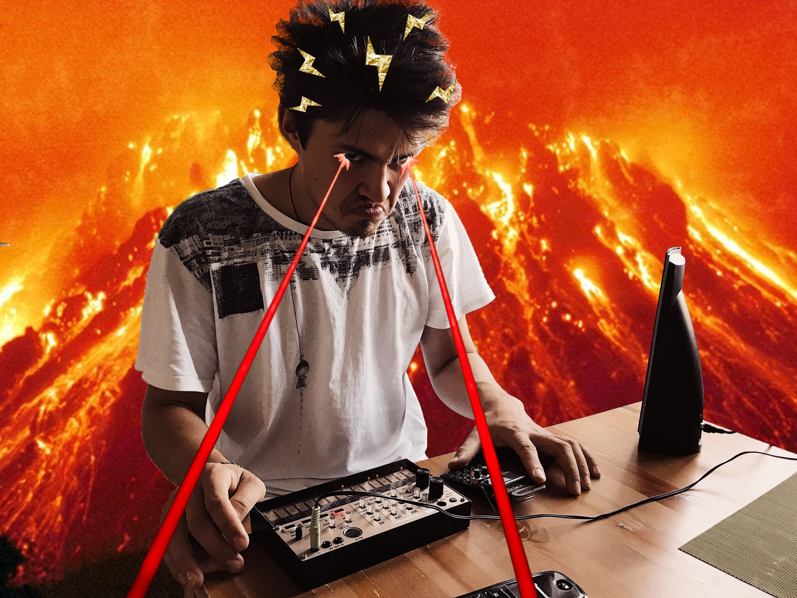
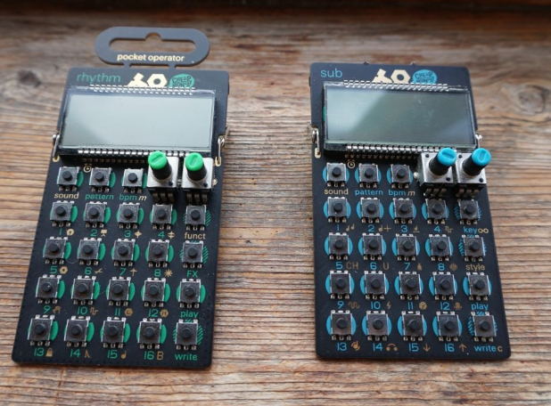
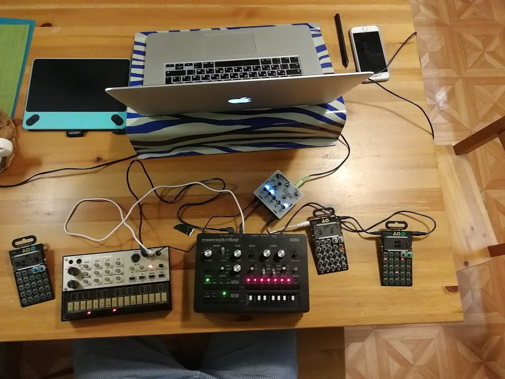
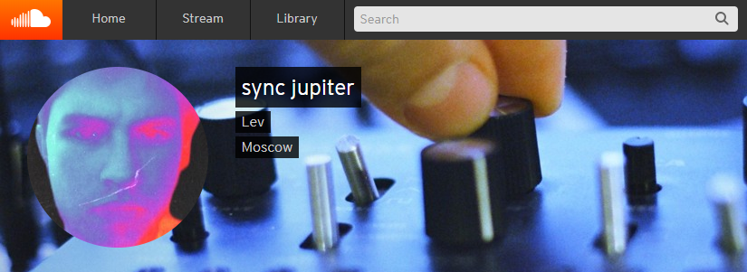
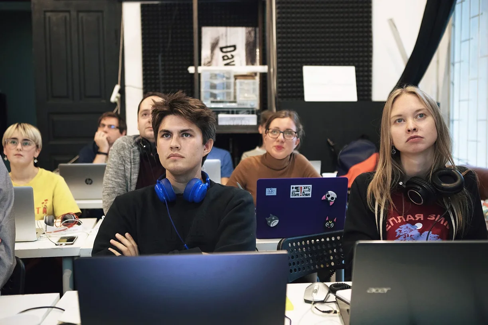

| Привет! Меня зовут Лев. В свободное время я делаю электронную музыку |
|  | До 2018 года я просто любил инструменты, иногда играл на гитаре, учился играть на барабанной установке и мечтал делать музыку сам. |
| все изменилось, когда я приобрел набор карманных синтезаторов pocket operator от компании Teenage Engineering |  |
| затем Георий Вояджи подарил мне korg volca keys - это небольшой синтезатор, который помог мне понять, как работает звук, волна, синтез, что такое LFO, фильтр и автоматизация |
| Я начал пробовать делать с помощью них музыку, приобрел очень дешевую аудиокарту, карманный микшер Bustle Dude(я в восторге от него) и стал записывать получившиеся треки в компьютер с помощью adobe audition |  |
|  | Наконец, я завел страничку на soundcloud и стал выкладывать музыку под именем Sync Jupiter. В 2010 году я решил, что буду делать песни под именем Mint Jupiter, но поскольку это были записанные на синхронизированных между собой синтезаторах треки, я немножко изменил название. |
| Следующий шаг был в приобретении мощного семплера Digitakt (я в восторге от него). Пришлось продать барабанную установку, но оно того стоило! Каждую ночь я делал новый трек, наслаждаясь результатом нового для меня уровня. |
|  | Спустя полгода, я попал в Школу Маскелиаде Это самое мощное, что происходило со мной в творческом плане. Я попал в невероятное теплое музыкальное комьюнити, научился работать в новой для себя программе Ableton, узнал всё необходимое для создания электронной музыки и, самое главное, обрел вдохновение, силы и мощную веру в себя. |
| Теория музыки добавила моим трекам гармонии, а знания о качественном сведении и мастеринге позволили мне делать музыку более качественную по звуку. Digitakt (я в восторге от него). Пришлось продать барабанную установку, но оно того стоило! Каждую ночь я делал новый трек, наслаждаясь результатом нового для меня уровня. |